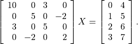
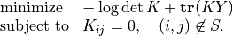

Sparse Linear Equations
In this section we describe routines for solving sparse sets of linear equations.
A real symmetric or complex Hermitian sparse matrix is stored as an
spmatrix object X of size
( , ) and an
additional character argument
, ) and an
additional character argument uplo with possible values 'L'
and 'U'. If uplo is 'L', the lower triangular part
of X contains the lower triangular part of the symmetric or Hermitian
matrix, and the upper triangular matrix of X is ignored. If uplo
is 'U', the upper triangular part of X contains the upper
triangular part of the matrix, and the lower triangular matrix of X is
ignored.
A general sparse square matrix of order is represented by an
spmatrix object of size (, ).
Dense matrices, which appear as right-hand sides of equations, are stored using the same conventions as in the BLAS and LAPACK modules.
Matrix Orderings
CVXOPT includes an interface to the AMD library for computing approximate minimum degree orderings of sparse matrices.
See also
P. R. Amestoy, T. A. Davis, I. S. Duff, Algorithm 837: AMD, An Approximate Minimum Degree Ordering Algorithm, ACM Transactions on Mathematical Software, 30(3), 381-388, 2004.
- cvxopt.amd.order(A[, uplo = 'L'])
Computes the approximate mimimum degree ordering of a symmetric sparse matrix
 . The ordering is returned as an integer dense matrix
with length equal to the order of . Its entries specify a
permutation that reduces fill-in during the Cholesky factorization.
More precisely, if
. The ordering is returned as an integer dense matrix
with length equal to the order of . Its entries specify a
permutation that reduces fill-in during the Cholesky factorization.
More precisely, if p = order(A), thenA[p, p]has sparser Cholesky factors thanA.
As an example we consider the matrix
>>> from cvxopt import spmatrix, amd
>>> A = spmatrix([10,3,5,-2,5,2], [0,2,1,2,2,3], [0,0,1,1,2,3])
>>> P = amd.order(A)
>>> print(P)
[ 1]
[ 0]
[ 2]
[ 3]
General Linear Equations
The module cvxopt.umfpack includes four functions for solving
sparse non-symmetric sets of linear equations. They call routines from
the UMFPACK library, with all control options set to the default values
described in the UMFPACK user guide.
See also
T. A. Davis, Algorithm 832: UMFPACK – an unsymmetric-pattern multifrontal method with a column pre-ordering strategy, ACM Transactions on Mathematical Software, 30(2), 196-199, 2004.
- cvxopt.umfpack.linsolve(A, B[, trans = 'N'])
Solves a sparse set of linear equations

where
is a sparse matrix and  is a dense matrix.
The arguments
is a dense matrix.
The arguments AandBmust have the same type ('d'or'z') asA. On exitBcontains the solution. Raises anArithmeticErrorif the coefficient matrix is singular.
In the following example we solve an equation with coefficient matrix
(1)
>>> from cvxopt import spmatrix, matrix, umfpack
>>> V = [2, 3, 3, -1, 4, 4, -3, 1, 2, 2, 6, 1]
>>> I = [0, 1, 0, 2, 4, 1, 2, 3, 4, 2, 1, 4]
>>> J = [0, 0, 1, 1, 1, 2, 2, 2, 2, 3, 4, 4]
>>> A = spmatrix(V,I,J)
>>> B = matrix(1.0, (5,1))
>>> umfpack.linsolve(A,B)
>>> print(B)
[ 5.79e-01]
[-5.26e-02]
[ 1.00e+00]
[ 1.97e+00]
[-7.89e-01]
The function linsolve is
equivalent to the following three functions called in sequence.
- cvxopt.umfpack.symbolic(A)
Reorders the columns of
Ato reduce fill-in and performs a symbolic LU factorization.Ais a sparse, possibly rectangular, matrix. Returns the symbolic factorization as an opaque C object that can be passed on tonumeric.
- cvxopt.umfpack.numeric(A, F)
Performs a numeric LU factorization of a sparse, possibly rectangular, matrix
A. The argumentFis the symbolic factorization computed bysymbolicapplied to the matrixA, or another sparse matrix with the same sparsity pattern, dimensions, and type. The numeric factorization is returned as an opaque C object that that can be passed on tosolve. Raises anArithmeticErrorif the matrix is singular.
- cvxopt.umfpack.solve(A, F, B[, trans = 'N'])
Solves a set of linear equations
where
is a sparse matrix and is a dense matrix.
The arguments AandBmust have the same type. The argumentFis a numeric factorization computed bynumeric. On exitBis overwritten by the solution.
These separate functions are useful for solving several sets of linear equations with the same coefficient matrix and different right-hand sides, or with coefficient matrices that share the same sparsity pattern. The symbolic factorization depends only on the sparsity pattern of the matrix, and not on the numerical values of the nonzero coefficients. The numerical factorization on the other hand depends on the sparsity pattern of the matrix and on its the numerical values.
As an example, suppose is the matrix (1) and
which differs from in its first and last entries. The following
code computes
>>> from cvxopt import spmatrix, matrix, umfpack
>>> VA = [2, 3, 3, -1, 4, 4, -3, 1, 2, 2, 6, 1]
>>> VB = [4, 3, 3, -1, 4, 4, -3, 1, 2, 2, 6, 2]
>>> I = [0, 1, 0, 2, 4, 1, 2, 3, 4, 2, 1, 4]
>>> J = [0, 0, 1, 1, 1, 2, 2, 2, 2, 3, 4, 4]
>>> A = spmatrix(VA, I, J)
>>> B = spmatrix(VB, I, J)
>>> x = matrix(1.0, (5,1))
>>> Fs = umfpack.symbolic(A)
>>> FA = umfpack.numeric(A, Fs)
>>> FB = umfpack.numeric(B, Fs)
>>> umfpack.solve(A, FA, x)
>>> umfpack.solve(B, FB, x)
>>> umfpack.solve(A, FA, x, trans='T')
>>> print(x)
[ 5.81e-01]
[-2.37e-01]
[ 1.63e+00]
[ 8.07e+00]
[-1.31e-01]
Positive Definite Linear Equations
cvxopt.cholmod is an interface to the Cholesky factorization routines
of the CHOLMOD package. It includes functions for Cholesky factorization
of sparse positive definite matrices, and for solving sparse sets of linear
equations with positive definite matrices.
The routines can also be used for computing
LDLT
(or
LDLH
factorizations
of symmetric indefinite matrices (with  unit lower-triangular and
unit lower-triangular and
 diagonal and nonsingular) if such a factorization exists.
diagonal and nonsingular) if such a factorization exists.
See also
Y. Chen, T. A. Davis, W. W. Hager, S. Rajamanickam, Algorithm 887: CHOLMOD, Supernodal Sparse Cholesky Factorization and Update/Downdate, ACM Transactions on Mathematical Software, 35(3), 22:1-22:14, 2008.
- cvxopt.cholmod.linsolve(A, B[, p = None, uplo = 'L'])
Solves

with
sparse and real symmetric or complex Hermitian.Bis a dense matrix of the same type asA. On exit it is overwritten with the solution. The argumentpis an integer matrix with length equal to the order of, and specifies an
optional reordering.
See the comment on
options['nmethods']for details on which ordering is used by CHOLMOD.Raises an
ArithmeticErrorif the factorization does not exist.
As an example, we solve
(2)
>>> from cvxopt import matrix, spmatrix, cholmod
>>> A = spmatrix([10, 3, 5, -2, 5, 2], [0, 2, 1, 3, 2, 3], [0, 0, 1, 1, 2, 3])
>>> X = matrix(range(8), (4,2), 'd')
>>> cholmod.linsolve(A,X)
>>> print(X)
[-1.46e-01 4.88e-02]
[ 1.33e+00 4.00e+00]
[ 4.88e-01 1.17e+00]
[ 2.83e+00 7.50e+00]
- cvxopt.cholmod.splinsolve(A, B[, p = None, uplo = 'L'])
Similar to
linsolveexcept thatBis anspmatrixand that the solution is returned as an output argument (as a newspmatrix).Bis not modified. See the comment onoptions['nmethods']for details on which ordering is used by CHOLMOD.
The following code computes the inverse of the coefficient matrix in (2) as a sparse matrix.
>>> X = cholmod.splinsolve(A, spmatrix(1.0,range(4),range(4)))
>>> print(X)
[ 1.22e-01 0 -7.32e-02 0 ]
[ 0 3.33e-01 0 3.33e-01]
[-7.32e-02 0 2.44e-01 0 ]
[ 0 3.33e-01 0 8.33e-01]
The functions linsolve and
splinsolve are equivalent to
symbolic and
numeric called in sequence, followed by
solve, respectively,
spsolve.
- cvxopt.cholmod.symbolic(A[, p = None, uplo = 'L'])
Performs a symbolic analysis of a sparse real symmetric or complex Hermitian matrix
for one of the two factorizations:(3)
and
(4)
where
 is a permutation matrix, is lower triangular
(unit lower triangular in the second factorization), and is
nonsingular diagonal. The type of factorization depends on the value
of
is a permutation matrix, is lower triangular
(unit lower triangular in the second factorization), and is
nonsingular diagonal. The type of factorization depends on the value
of options['supernodal'](see below).If
uplois'L', only the lower triangular part ofAis accessed and the upper triangular part is ignored. Ifuplois'U', only the upper triangular part ofAis accessed and the lower triangular part is ignored.The symbolic factorization is returned as an opaque C object that can be passed to
numeric.See the comment on
options['nmethods']for details on which ordering is used by CHOLMOD.
- cvxopt.cholmod.numeric(A, F)
Performs a numeric factorization of a sparse symmetric matrix as (3) or (4). The argument
Fis the symbolic factorization computed bysymbolicapplied to the matrixA, or to another sparse matrix with the same sparsity pattern and typecode, or bynumericapplied to a matrix with the same sparsity pattern and typecode asA.If
Fwas created by asymbolicwithuploequal to'L', then only the lower triangular part ofAis accessed and the upper triangular part is ignored. If it was created withuploequal to'U', then only the upper triangular part ofAis accessed and the lower triangular part is ignored.On successful exit, the factorization is stored in
F. Raises anArithmeticErrorif the factorization does not exist.
- cvxopt.cholmod.solve(F, B[, sys = 0])
Solves one of the following linear equations where
Bis a dense matrix andFis the numeric factorization (3) or (4) computed bynumeric.sysis an integer with values between 0 and 8.sysequation
0

1
2
3

4
5
6
7
8
(If
Fis a Cholesky factorization of the form (3), is an identity matrix in this table. If Ais complex, should be replaced by .)The matrix
Bis a dense'd'or'z'matrix, with the same type asA. On exit it is overwritten by the solution.
- cvxopt.cholmod.spsolve(F, B[, sys = 0])
Similar to
solve, except thatBis a class:spmatrix, and the solution is returned as an output argument (as anspmatrix).Bmust have the same typecode asA.
For the same example as above:
>>> X = matrix(range(8), (4,2), 'd')
>>> F = cholmod.symbolic(A)
>>> cholmod.numeric(A, F)
>>> cholmod.solve(F, X)
>>> print(X)
[-1.46e-01 4.88e-02]
[ 1.33e+00 4.00e+00]
[ 4.88e-01 1.17e+00]
[ 2.83e+00 7.50e+00]
- cvxopt.cholmod.diag(F)
Returns the diagonal elements of the Cholesky factor
in (3), as a dense matrix of the same type as A. Note that this only applies to Cholesky factorizations. The matrix in an LDLT
factorization can be retrieved via solvewithsysequal to 6.
In the functions listed above, the default values of the control
parameters described in the CHOLMOD user guide are used, except for
Common.print which is set to 0 instead of 3 and
Common.supernodal which is set to 2 instead of 1.
These parameters (and a few others) can be modified by making an
entry in the dictionary cholmod.options.
The meaning of the options options['supernodal'] and
options['nmethods'] is summarized as follows (and described
in detail in the CHOLMOD user guide).
options['supernodal']If equal to 0, a factorization (4) is computed using a simplicial algorithm. If equal to 2, a factorization (3) is computed using a supernodal algorithm. If equal to 1, the most efficient of the two factorizations is selected, based on the sparsity pattern. Default: 2.
options['nmethods']The default ordering used by the CHOLMOD is the ordering in the AMD library, but depending on the value of
options['nmethods']. other orderings are also considered. Ifnmethodsis equal to 2, the ordering specified by the user and the AMD ordering are compared, and the best of the two orderings is used. If the user does not specify an ordering, the AMD ordering is used. If equal to 1, the user must specify an ordering, and the ordering provided by the user is used. If equal to 0, all available orderings are compared and the best ordering is used. The available orderings include the AMD ordering, the ordering specified by the user (if any), and possibly other orderings if they are installed during the CHOLMOD installation. Default: 0.
As an example that illustrates diag and the
use of cholmod.options, we compute the logarithm of the determinant
of the coefficient matrix in (2) by two methods.
>>> import math
>>> from cvxopt.cholmod import options
>>> from cvxopt import log
>>> F = cholmod.symbolic(A)
>>> cholmod.numeric(A, F)
>>> print(2.0 * sum(log(cholmod.diag(F))))
5.50533153593
>>> options['supernodal'] = 0
>>> F = cholmod.symbolic(A)
>>> cholmod.numeric(A, F)
>>> Di = matrix(1.0, (4,1))
>>> cholmod.solve(F, Di, sys=6)
>>> print(-sum(log(Di)))
5.50533153593
Example: Covariance Selection
This example illustrates the use of the routines for sparse Cholesky factorization. We consider the problem
(5)
The optimization variable is a symmetric matrix of order
and the domain of the problem is the set of positive definite
matrices. The matrix  and the index set
and the index set  are given.
We assume that all the diagonal positions are included in .
This problem arises in maximum likelihood estimation of the covariance
matrix of a zero-mean normal distribution, with constraints
that specify that pairs of variables are conditionally independent.
are given.
We assume that all the diagonal positions are included in .
This problem arises in maximum likelihood estimation of the covariance
matrix of a zero-mean normal distribution, with constraints
that specify that pairs of variables are conditionally independent.
We can express as
where  are the nonzero elements in the lower triangular part of
, with the diagonal elements scaled by 1/2, and
are the nonzero elements in the lower triangular part of
, with the diagonal elements scaled by 1/2, and
where (, ) are the positions of the nonzero entries in the lower-triangular part of . With this notation, we can solve problem (5) by solving the unconstrained problem
The code below implements Newton’s method with a backtracking line search. The gradient and Hessian of the objective function are given by
where  denotes Hadamard product.
denotes Hadamard product.
from cvxopt import matrix, spmatrix, log, mul, blas, lapack, amd, cholmod
def covsel(Y):
"""
Returns the solution of
minimize -log det K + Tr(KY)
subject to K_{ij}=0, (i,j) not in indices listed in I,J.
Y is a symmetric sparse matrix with nonzero diagonal elements.
I = Y.I, J = Y.J.
"""
I, J = Y.I, Y.J
n, m = Y.size[0], len(I)
N = I + J*n # non-zero positions for one-argument indexing
D = [k for k in range(m) if I[k]==J[k]] # position of diagonal elements
# starting point: symmetric identity with nonzero pattern I,J
K = spmatrix(0.0, I, J)
K[::n+1] = 1.0
# Kn is used in the line search
Kn = spmatrix(0.0, I, J)
# symbolic factorization of K
F = cholmod.symbolic(K)
# Kinv will be the inverse of K
Kinv = matrix(0.0, (n,n))
for iters in range(100):
# numeric factorization of K
cholmod.numeric(K, F)
d = cholmod.diag(F)
# compute Kinv by solving K*X = I
Kinv[:] = 0.0
Kinv[::n+1] = 1.0
cholmod.solve(F, Kinv)
# solve Newton system
grad = 2*(Y.V - Kinv[N])
hess = 2*(mul(Kinv[I,J],Kinv[J,I]) + mul(Kinv[I,I],Kinv[J,J]))
v = -grad
lapack.posv(hess,v)
# stopping criterion
sqntdecr = -blas.dot(grad,v)
print("Newton decrement squared:%- 7.5e" %sqntdecr)
if (sqntdecr < 1e-12):
print("number of iterations: ", iters+1)
break
# line search
dx = +v
dx[D] *= 2 # scale the diagonal elems
f = -2.0 * sum(log(d)) # f = -log det K
s = 1
for lsiter in range(50):
Kn.V = K.V + s*dx
try:
cholmod.numeric(Kn, F)
except ArithmeticError:
s *= 0.5
else:
d = cholmod.diag(F)
fn = -2.0 * sum(log(d)) + 2*s*blas.dot(v,Y.V)
if (fn < f - 0.01*s*sqntdecr):
break
s *= 0.5
K.V = Kn.V
return K